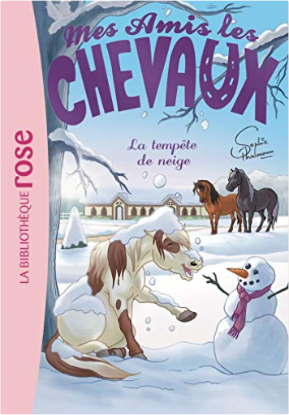
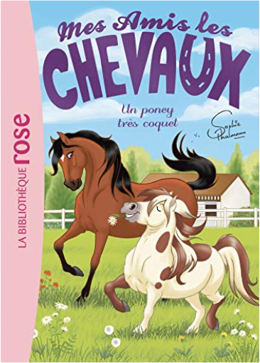
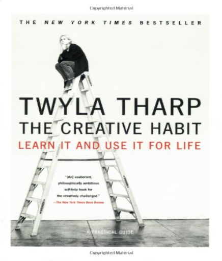

Julien
Collection Total:
1 866 Items
Last Updated:
Feb 24, 2021
Shelf:
Books
Movies
Albums
Videogames
Games
BD
BD Camille
Blu-ray
Business
Camille
Comics
Cooking
Lego
Manga
Pauline
Photography
Star Wars
Travel
TV Shows
Un livre dont vous êtes le héro
Vinyl
Walt Disney
60
61
62
63
64
mes amis les chevaux, tome 20 - tous aux pony games !
sophie thalmann
2016271302
mes amis les chevaux, tome 21 : la grande aventure d'andalou
sophie thalmann
2017039934
mes amis les chevaux, tome 24 : que le meilleur gagne !
sophie thalmann
2017071706

mes amis les chevaux, tome 25 : la tempête de neige
sophie thalmann
201707229X

mes amis les chevaux, tome 26 : un poney très coquet
sophie thalmann
2011183359
mes amis les chevaux, tome 27 : mission galop !
sophie thalmann
2017072168
mes amis les chevaux, tome 28 : un invité surprise
sophie thalmann
2017105104
mes amis les chevaux, tome 29 : plus de peur que de mal !
sophie thalmann
2017120448
mes amis les chevaux, tome 30 : au feu !
sophie thalmann
2017873063
mes amis les chevaux, tome 31 - un sacré chantier !
sophie thalmann
2016288353
mes amis les chevaux, tome 32 - duel de champions
sophie thalmann
2017131008

the creative habit
twyla tharp
0743235274
lightroom 3 par la pratique
gilles theophile
2212127650
42 km 195
bernard thomasson
2081353709
60
61
62
63
64

 Made with Delicious Library
Made with Delicious Library